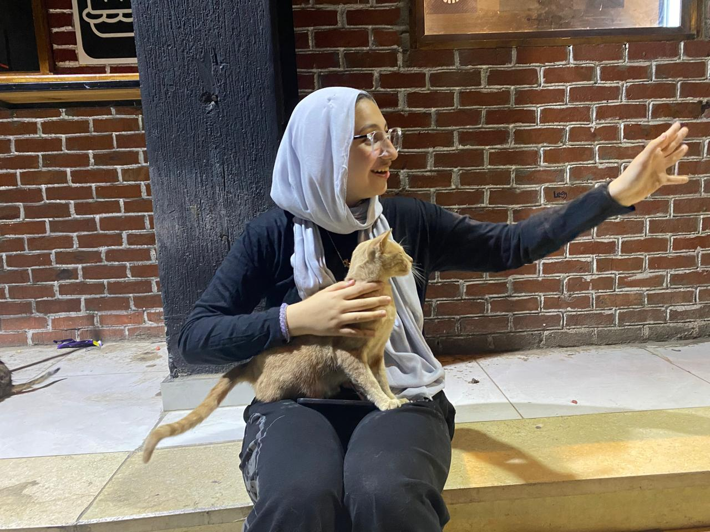
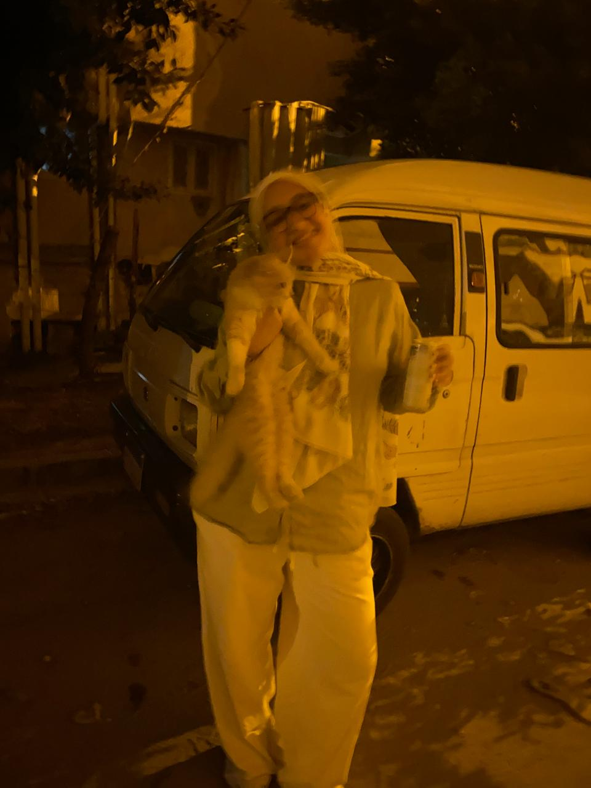

this was before hadary's class if you remember legit like ten cats were following you and just staying around you it was so cute like all the cats just knew yes youre a good person and they were drawn to you like that is such a flex seriously

you look so pretty in these LIKE HELLO EXCUSE ME I CANT these make me miss you so much

this was a more recent one like we went out and got red bull plus we got you GUMMY BEARSSSS EHEHEHEHHE